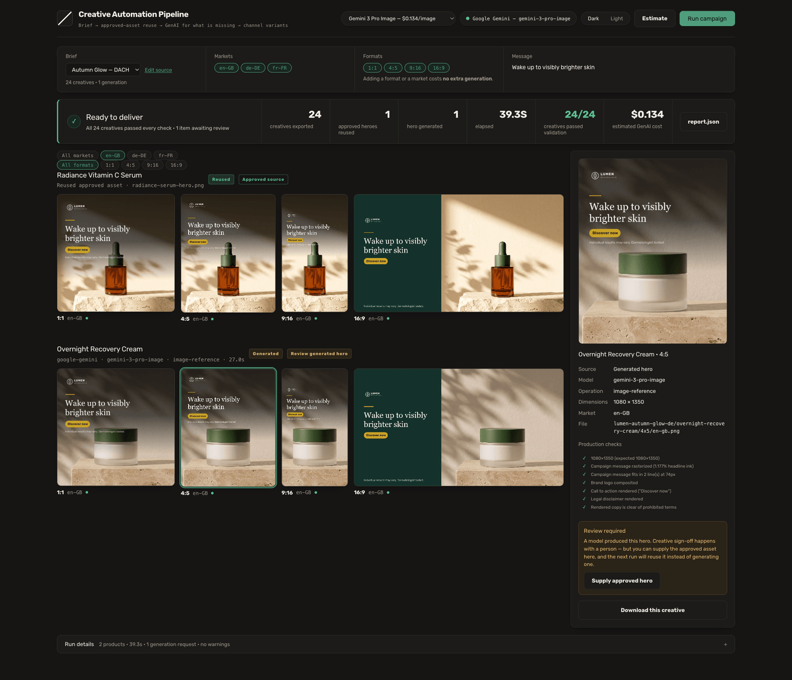
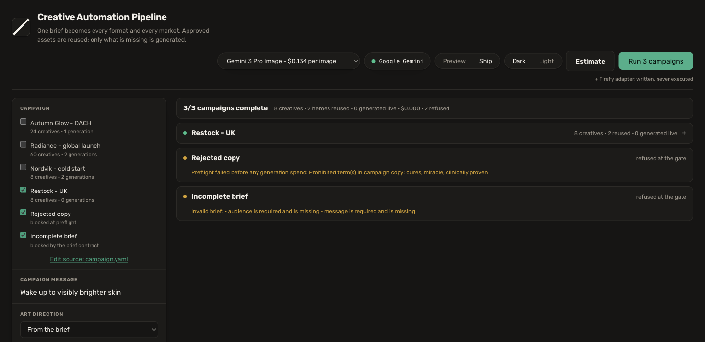

Global consumer goods · hundreds of localized campaigns a month
A brand team launching hundreds of localized social campaigns a month spends most of its budget producing the same message across every product, format and market - on brand, and inside each market's legal rules. Almost all of that work is mechanical.
This automates the mechanical part and pays a model only where a human genuinely needs something new: one paid generation per product, and every format and market derived from it deterministically. 24 creatives in 39.6 seconds for $0.134.
The expensive, non-deterministic step happens once per product. Everything after it is pure transformation, so adding a format or a market multiplies the output at zero additional cost - and a test asserts exactly that.
The three business metrics, separated into what this run measured and what it estimates from a baseline the brief supplies. Nothing here is a CTR, a conversion or a revenue figure: this pipeline produces creative and never publishes, so it has no basis for one.
Time saved matters multiplied by monthly volume, so the per-run figure is stated honestly and the multiplication is left to the reader. The compounding number is the reuse rate: every campaign costs less than the last as more of the catalogue becomes approved.


The console is the production operator's view - whoever is accountable for getting a campaign out. A creative director's job starts where this ends: at the review badge on anything a model touched, and at the exported files. In production that review surface is GenStudio for Performance Marketing, which owns brand approval and activation; this is the spine underneath it.
A reused approved asset and a freshly generated one collapse into one type. Past that line nothing knows or cares where the image came from, which is what makes the provider swappable and the pipeline testable without a network.
Regenerating an approved asset costs money, takes seconds instead of milliseconds, is non-deterministic, and throws away a human approval that carries legal weight. The branch is a real filesystem check - delete the file and the same brief takes the generate path.
The campaign-message check renders the text layer in isolation and counts opaque pixels. If the font fails to resolve, ink goes to zero and the creative is marked failed. A check that cannot go red is decoration - and so is a check that is absent. The logo rule used to skip itself for brands with no lockup, so those campaigns reported every check passing from a suite that had quietly dropped one.
The 9:16 template honours Meta's safe zone - 14% top, 35% bottom, 6% sides free of text. My first version put the headline inside the bottom 35%, where the platform's own overlay would have covered the entire message. The bounds are now derived from the spec and pinned by a test.
Every product gets a caption and a tag set per market, written to
copy/<locale>.txt beside the images. It is assembled from copy
the brief already carries and a human already signed off, not generated - so it
costs nothing, cannot hallucinate a claim, and goes through the same legal scan
as the pixels. Producing the image and leaving the words is stopping one step
short of the thing being automated.
Each market supplies its own signed-off message, CTA and disclaimer. A localized cosmetic claim is a regulatory statement in each jurisdiction - it needs human sign-off, not a model's best guess. The prohibited-claim scan runs across every market.
A dry run resolves exactly the way a real run does - same filesystem, same rules - then stops. It reports what will be reused, what will be generated, and what it will cost. A test asserts the estimate matches the run that follows.
Every run appends to a history file, and the console tracks reuse rate across all of them. That is the number that matters: the same brief costs less each quarter, because more of the catalogue is already approved. Spend tracks what a brand owns, not what it wants.
Everything after the hero is byte-identical run to run - a test proves it. Generation is the one step that is not. Adobe documents seed-based reproducibility on its v3 generation API; Image Model 5's v4 schema was not verified here, so this implementation neither claims nor sends it. Gemini's image API exposes no seed at all. Recording the gap honestly beats claiming it is closed.
Gemini 3 Pro Image is what actually runs, and it is named in every provenance record. The Adobe Firefly Image Model 5 adapter is written but has no entitlement to run against, so it is never auto-selected - an untested path must not be able to quietly win. Firefly remains the right production choice: licensed training data, Content Credentials, and indemnification Adobe extends to certain generally available Google and OpenAI models surfaced through Firefly Creative Production for Enterprise. One governed surface beats six vendor contracts.
| Capability | How it works |
|---|---|
| Structured campaign brief | ✓ YAML or JSON, one Zod schema, carrying the fields a creative brief names |
| Region, audience, message | ✓ Required fields, plus objective, tone and call to action |
| Reuse approved assets | ✓ Product A reused, driven by a real filesystem check |
| Generate only what is missing | ✓ Product B generated from its packshot as identity anchor |
| Channel formats | ✓ Four - 1:1, 4:5, 9:16, 16:9 - and each run asserts its own coverage in report.json → assignmentProof |
| Campaign message in the pixels | ✓ Rasterized into pixels, verified by ink measurement |
| Localization | ✓ en-GB · de-DE · fr-FR, at zero extra generation cost |
| Runs locally | ✓ npm run dev or CLI. It also runs with no API key at all, as a labelled offline preview - which deliberately does not satisfy the missing-asset GenAI requirement, and reports so |
| Organized outputs | ✓ By campaign / product / ratio / locale |
| Brand compliance | ✓ Logo, brand colour, WCAG contrast, safe zone |
| Legal / MLR checks | ✓ Prohibited-claim scan, run before any spend |
| Caption and hashtags per post | ✓ Assembled from the market's own signed-off copy - no model call, no runtime translation - and screened by the same prohibited-claim list as the pixels |
| Logging and reporting | ✓ report.json with real provenance and per-check results |
| Documentation | ✓ Plus verified API, creative-standards and model-strategy notes |
| Engineering discipline | ✓ Pipeline and visual-regression coverage in CI on Node 22 and 24, an offline-preview smoke job, and a single release gate - npm run check |
The recording goes to the Talent Partner, and will be embedded here.
It is a setup-and-run walkthrough, as the exercise asks: install, one API key,
npm run doctor, then the console. Product A reuses its approved hero,
Product B generates from its packshot, 24 creatives are validated and exported for
one live hero generation, and the legal gate refuses a non-compliant brief before
any spend.